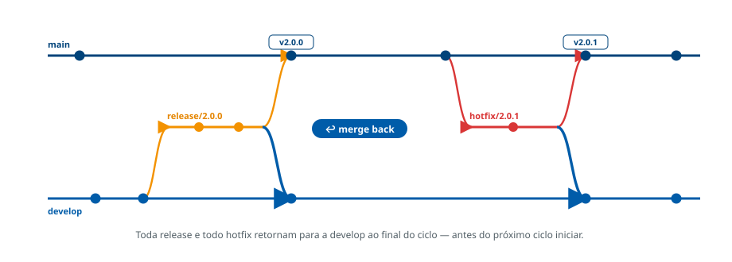

A sincronização entre branches principais deve ser garantida ao final de cada ciclo
A sincronização das branches main e develop ao término de cada
ciclo é obrigatória. Esse processo, conhecido como merge back,
assegura que ambas as linhas permanentes reflitam o estado mais atualizado do código.
O que é um ciclo
Um ciclo corresponde ao período completo de desenvolvimento que culmina em uma entrega planejada — o fechamento de uma release, a conclusão de um sprint ou a implementação de um conjunto de funcionalidades. Ao final de cada ciclo, a sincronização das linhas permanentes deve ocorrer antes do início do próximo.
O merge back na prática

main
retornam obrigatoriamente para a develop, prevenindo commits órfãos.Regras obrigatórias do merge back
- Release concluída: sempre que uma release é integrada à
main, o merge de volta nadevelopdeve ser realizado. - Hotfix finalizado: após a finalização de um hotfix, a correção deve ser propagada para a
develop, mantendo a base estável para novas features. - Fechamento do ciclo: cada ciclo deve terminar com a integração completa das linhas principais antes do início do próximo.
- Novas branches: features e hotfixes devem ser sempre criados a partir de uma versão correta e atualizada das linhas principais.
A falta do merge back gera regressões, conflitos e perda de rastreabilidade. A sincronização das linhas principais é regra institucional e não pode ser omitida ao final de um ciclo.
As referências metodológicas sobre este assunto devem ser incluídas aqui. (espaço reservado para os links institucionais.)